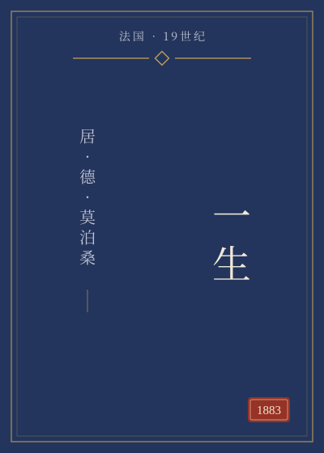
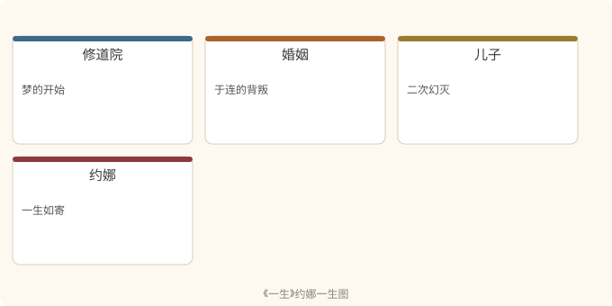

一生
一、基本信息
| 作者 | 莫泊桑 |
|---|---|
| 成书/出版 | 出版年份待核（Britannica B310：Notable Works 列表载'A Woman's Life'——1883年说通说待核） Guy de Maupassant — Encyclopaedia Britannica（百科全书） |
| 国别/地区 | 法国 |
| 时代 | 近代 · 19世纪 |
| 体裁 | 长篇小说 |
| 语言 | 法语 |

《一生》约娜一生图（主题·结构图）
二、创作背景
Britannica（B310）：莫泊桑 major works Quick Facts 载'A Woman's Life'（一生）——正文未载细节（通说待核：约娜的诺曼底庄园故事）。
作者（B310）：'widely considered the greatest French short-story author'，约300篇短篇；福楼拜门徒——'He is my disciple and I love him like a son'。
三、内容脉络
约娜的一生：修道院→婚姻→丈夫的背叛→儿子的堕落（通说待核）。
诺曼底庄园的四季（通说待核）。
四、主要人物表
| 人物 | 身份 | 说明 |
|---|---|---|
| 约娜 | 女庄园主 | （通说待核） |
| 于连 | 丈夫 | （通说待核） |
五、主题与艺术特点
- 女性一生的幻灭（通说待核）。
- 诺曼底乡土（通说）。
- 自然主义的婚姻解剖（通说待核）。
六、影响与评论
- Britannica：莫泊桑 Notable Works 含'A Woman's Life'（B310）。
Guy de Maupassant — Encyclopaedia Britannica（百科全书） - Britannica：莫泊桑为福楼拜门徒、'greatest French short-story author'（B310）。
Guy de Maupassant — Encyclopaedia Britannica（百科全书）
七、阅读建议
难点
- 长篇的心理铺陈。
- 诺曼底庄园生活。
- 《一生》（人民文学出版社，通说待核）。
- 法文原版（公有领域）。
先短篇后《一生》。
八、待核实
- 1883年出版（Victor Havard说）核对。
- 约娜/于连人名核对。
- 《漂亮朋友》1885年说待核。